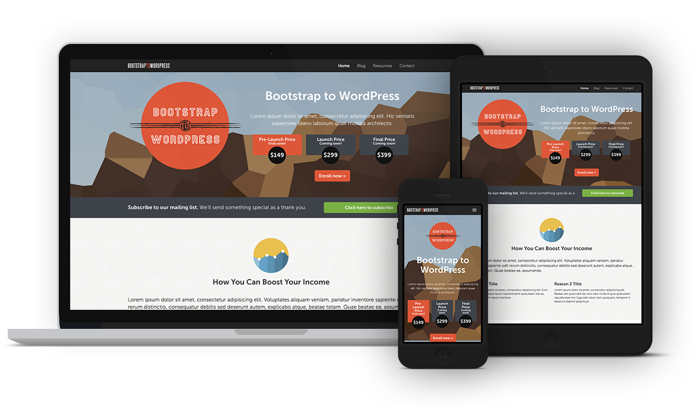
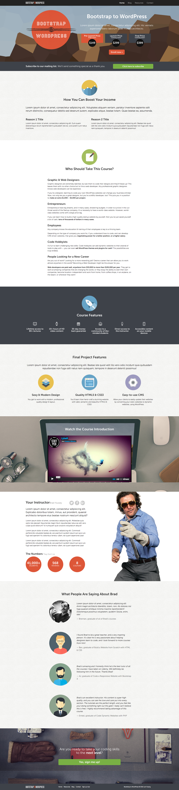

Bootstrap to Wordpress is a responsive WordPress theme I make from scratch by following an online course, WordPress Theme Development with Bootstrap.
The home page is styled as a landing page with different sections showing off a product. Header and footer have beautiful parallax effects.
Each page is dynamically coded with PHP and HTML so that text, images, icons can be easily updated in the admin area. Custom fields are created for each section of the home page and are nicely grouped together using Advanced Custom Fields.
Here's the dynamic template for Boost Your Income section using custom fields.
<?php
$income_feature_image = get_field( 'income_feature_image' );
$income_section_title = get_field( 'income_section_title' );
$income_section_description = get_field( 'income_section_description' );
$reason_1_title = get_field( 'reason_1_title' );
$reason_1_description = get_field( 'reason_1_description' );
$reason_2_title = get_field( 'reason_2_title' );
$reason_2_description = get_field( 'reason_2_description' );
?>
<!-- BOOST YOUR INCOME
================================================ -->
<section id="boost-income">
<div class="container">
<div class="section-header">
<!-- If user uploaded an image -->
<?php if( !empty($income_feature_image) ) : ?>
<img src="<?php echo $income_feature_image['url']; ?>" alt="<?php echo $income_feature_image['alt']; ?>">
<?php endif; ?>
<h3><?php echo $income_section_title; ?></h3>
</div><!-- section-header -->
<p class="lead"><?php echo $income_section_description; ?></p>
<div class="row">
<div class="col-sm-6">
<h3><?php echo $reason_1_title; ?></h3>
<p><?php echo $reason_1_description; ?></p>
</div><!-- col-sm-6 -->
<div class="col-sm-6">
<h3><?php echo $reason_2_title; ?></h3>
<p><?php echo $reason_2_description; ?></p>
</div><!-- .col-sm-6 -->
</div><!-- .row -->
</div><!-- .container -->
</section>Custom post types like course features, project features, testimonials and resources are added to the admin area using Custom Post Type UI. Hence, the user can easily access and edit these items from the left sidebar of the admin area.
Here's how to print out all course features in a loop:
<?php $loop = new WP_Query( array( 'post_type' => 'course_feature', 'orderby' => 'post-id', 'order' => 'ASC') ); ?>
<?php while( $loop->have_posts() ) : $loop->the_post(); ?>
<div class="col-sm-2">
<i class="<?php the_field('course_feature_icon'); ?>"></i>
<h4><?php the_title(); ?></h4>
</div><!-- col -->
<?php endwhile; wp_reset_query(); ?>The Resource page shows dynamic resources which can be added easily via admin area → Resources.
The blog page's post excerpt is customized with the following style.
There are also a few customized sidebar widgets.
The contact page consists of a simple contact form that is made using Contact Form 7.
The theme is developed locally by setting up a localhost with MAMP for easier development, then the local site's database is imported to the online site via phpMyAdmin. However, the local site’s database consists of more than 100 occurrence of the localhost’s address. The online site won’t work until all of those occurrence are changed to the online address. This can be easily done with the help of Search Replace DB, a php plugin that quickly modifies a string throughout a database.